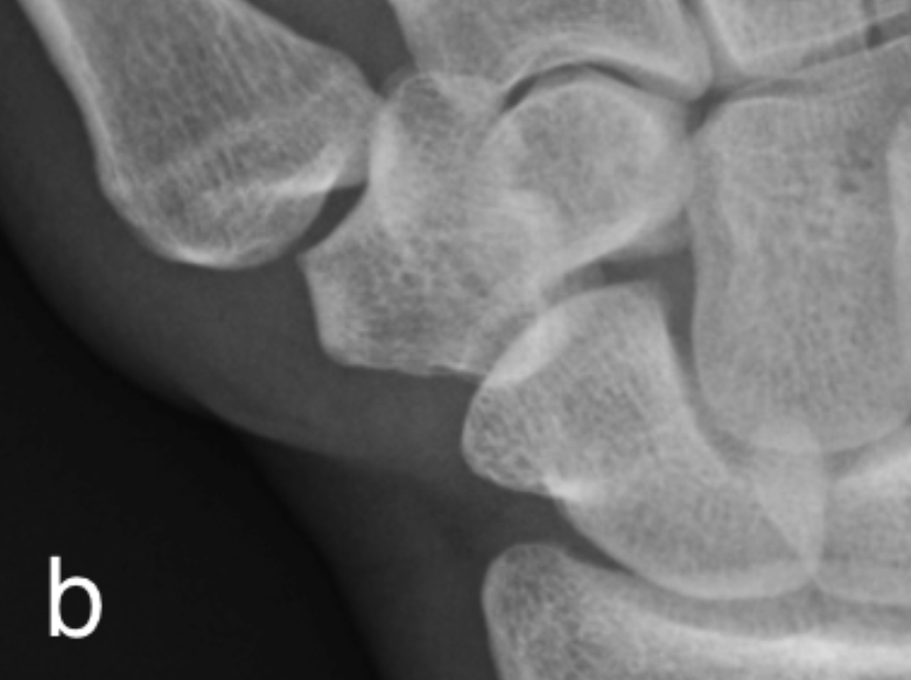
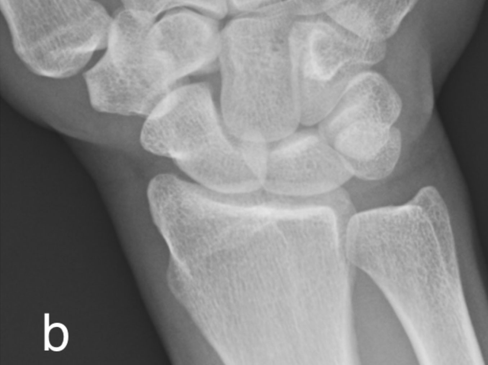

Joint Space
- In synovial joints, the congruent bony surfaces are lined with articular cartilage
- The joint space seen radiographically represents the two layers of radiolucent articular cartilage between the articulating bones
- Narrowing of this space is due to cartilage destruction
- Uniform/symmetrical narrowing may be across the joint space and is typical of an inflammatory arthritis.
- Concentric/asymmetric narrowing is typical of degenerative joint disease.
- In contrast joint space widening is secondary to occupation of and expansion of the joint space due to effusion (simple, inflammatory, infective/pus, hemorrhagic) and/or synovial proliferation.
 info_outline
info_outline
Erosions
- An erosion is a non-traumatic defect of cortical or subchondral bone plate secondary to excessive local bone resorption and inadequate bone formation.
- Marginal/Periarticular In rheumatoid arthritis erosions are secondary to a combination of active synovial proliferation and high levels of inflammatory cytokines stimulating increased osteoclastic activity.
- An erosion is visible on radiographs as a defect in the cortical or subchondral bone plate
- Erosion location can be helpful to decipher the underlying pathology e.g.
- central e.g. erosive OA, psoriatic arthritis.
-
Central erosions may be a component of the “seagull” pattern characteristic of erosive osteoarthritis whereby central erosions occurs with marginal osteophytes and joint space loss.
info_outline
Central erosion (arrow) and osteophytes (arrowhead) at a PIPJ with a typical “Gull-wing” configuration in a patient with Erosive Osteoarthritis).
-
In psoriatic arthritis a “pencil-in-cup” erosion develops from a large central erosion on one side of the joint and marginal erosions with secondary whittling opposite side joint. The narrowed residual bone falls into the large erosion like a pencil in
a cup.
info_outline
“Pencil-in-cup” erosion in a patient with longstanding Psoriatic Arthritis. Lateral radiograph demonstrates a large central erosion (arrow) of the distal phalanx and circumferential erosion head middle phalanx giving it a whittled appearance
-
Central erosions may be a component of the “seagull” pattern characteristic of erosive osteoarthritis whereby central erosions occurs with marginal osteophytes and joint space loss.
info_outline
-
Marginal/periarticular - marginal erosions can occur in the erosive spectrum of many arthropathies including rheumatoid arthritis, psoriatic arthritis, gout and septic arthritis, where there is bilateral diffuse central and marginal erosions.
info_outline
Marginal erosions in rheumatoid arthritis at a PIPJ. Most of the erosions have a lucent deep margin, lack a sclerotic border, in conjunction with mild periarticular osteopenia and soft tissue swelling suggest active disease. The joint space
- Juxta-articular or remote from the joint (gout).
- central e.g. erosive OA, psoriatic arthritis.
- Erosion margin
-
Sclerotic margin may indicate an inactive and healing erosion e.g. inactive rheumatoid arthritis. It can also be secondary to a pressure type erosion whereby the cortex is slowly eroded but mounts an osteoblastic response e.g. gout, PVNS.
 info_outline
Juxta-articular “punched-out” erosion (curved arrow), marginal erosion (arrow) and soft tissue typhus (line) in a patient with chronic gout. Note the maintained joint space, classically seen in gout ,and the sclerotic margins
info_outline
Juxta-articular “punched-out” erosion (curved arrow), marginal erosion (arrow) and soft tissue typhus (line) in a patient with chronic gout. Note the maintained joint space, classically seen in gout ,and the sclerotic margins
-
Sclerotic margin may indicate an inactive and healing erosion e.g. inactive rheumatoid arthritis. It can also be secondary to a pressure type erosion whereby the cortex is slowly eroded but mounts an osteoblastic response e.g. gout, PVNS.
Subchondral Cyst
- Subchondral cysts develop between the deformed trabeculae in areas of eburnation. Cysts are variable in size and have a thin sclerotic margin.
- Cysts may communicate with the joint in which case there is a defect in the overlying cortex/subchondral bone plate. This defect may be invisible radiographically or it may be large and simulate an erosion.
- Large subchondral cysts raise the possibility of underlying crystal disease.
- Subchondral cysts are also known as geodes.
Example Radiograph
 info_outline
info_outline
a) Subchondral cyst base first metacarpal at the 1st CMCJ in a patient with osteoarthritis. Note that the subchondral bone plate is intact (curved arrow). There is also joint space loss, subchondral sclerosis and radial subluxation of the first

info_outline
b) Normal radiograph for comparison
Osteophyte
- In a degenerative joint, in regions of lower stress there is increased vascularisation in the subchondral regions which in turn stimulates endochondral ossification and subsequent osteophyte formation.
- Radiographically this appears as new bone formation growing laterally as an extension of the joint margin in a degenerative joint.
Example Radiograph
 info_outline
info_outline
2nd and 3rd MCPJ osteophytes (arrows)
Osteoporosis
- Osteoporosis is a systemic disorder of bone metabolism characterized by a decreased bone mineral density and deterioration in bone microarchitecture.
- There is a decline in both bone quality and quantity
- Hand radiographs in osteoporotic patients may reveal characteristic findings. There is diffuse increase in lucency with thinning of cortex and trabeculae.
- The metacarpal index is a useful tool in the assessment of osteoporosis and has been shown to be associated with risk of hip fracture.
Metacarpal index:
 info_outline
info_outline
a) PA radiographs of the hands demonstrating osteoporosis
info_outline
b) calculation of the metacarpal index of the non-dominant second metacarpal at the mid-diaphysis. Measure the width bone {a} and the combined cortical thickness {b}, Metacarpal Index = b/a. References are available for different age groups and ethnicity.
In general normal values are greater than 50%.
Subperiosteal Resorption
- Osteoclastic activity is increased in response to increased PTH levels.
- Subperiosteal Resorption refers to osteoclastic bone resorption on the periosteal surface
- This is a specific finding in hyperparathyroidism.
- Classically affects the radial aspect of the proximal and middle phalanges of the 2nd and 3rd digits.
- Check radiograph for acro-osteolysis (tuft resorption), Brown tumors and chondrocalcinosis which may also be present in hyperparathyroidism.
Example Radiograph
a) Subperiosteal Resorption along the radial aspects of the 2nd and 3rd digits (Hyperparathyroidism). Note also marginal erosion at the third DIPJ.
 info_outline
info_outline
b) Normal radiograph for comparison
Enthesophyte
- An Enthesophyte is abnormal new bone formation at the insertion of ligament, tendon or capsular attachment to bone (enthesis) in response to stress or inflammation at that site.
- Common sites include the iliac crests, patella (quadriceps and patellar tendons) and calcaneus (Achilles tendon).
- Uncommon in the hand radiograph, usually seen in seronegative arthritis at capsular attachment sites, e.g.PsA
Example Radiograph
 info_outline
info_outline
Enthesophyte formation (arrow) at capsular attachment DIPJ in a patient with PsA. Note new bone formation (line) more distally that is commonly seen in PsA.
Chondrocalcinosis
- Chondrocalcinosis refers to calcification of cartilage, hyaline or fibrocartilage
- Involvement of hyaline cartilage causes increased density of the cartilage which then become visible on radiographs. Not commonly seen on hand radiographs but can be seen in larger joints such as the knee.
- Calcification of fibrocartilage, triangular fibrocartilage at the wrist, appears as linear increased attenuation of the TFC, separating the distal radioulnar and radiocarpal joints.
- Ligamentous calcification, commonly the scapholunate and lunotriquetral, is often present.
- It is usually, but not always, due to calcium pyrophosphate deposition.
Example Radiographs
 info_outline
info_outline
a) Chondrocalcinosis of the triangular fibrocartilage (arrow) and lunotriquetral ligament (line) in a patient with CPPD arthropathy

info_outline
b) Normal radiograph for comparison
Soft Tissue Swelling
- Soft tissue swelling may be localized or diffuse
- In arthritis it is usually localized and periarticular and may be the first sign of inflammation.
- It may represent:
- soft tissue oedema secondary to underlying active inflammation within a joint
- displacement of soft tissue related to an underlying joint effusion/synovitis
- it may be secondary to tendinosis and tenosynovitis.
- Findings may be subtle and include convexity to the soft tissue contour, loss of discrete fat planes and increased attenuation of the soft tissue.
- In dactylitis there is diffuse soft tissue swelling of a digit (finger or toe), also known as a sausage finger. This occurs in seronegative arthritis, most commonly psoriatic arthritis. May also occur in non-arthritis conditions including infection and sickle cell disease.
- Review the skin surface for irregularity/ulceration and soft tissue air suggesting injury or infection. Exclude radiopaque foreign bodies.
- Soft tissue swelling of increased density may represent a gouty tophus which may eventually calcify
Example Radiograph
 info_outline
info_outline
{kind=link}
{kind=link}
{kind=link}
{kind=link}
{kind=link}
{kind=link}
{kind=link}
{kind=link}
{kind=link}
{kind=link}
{kind=link}
{kind=link}
{kind=link}
{kind=link}
{kind=link}
{kind=link}
{kind=link}
{kind=link}
{kind=link}
{kind=link}
{kind=link}
{kind=link}
{kind=link}
Alignment
- Alignment must be considered with respect to both the individual joint alignment and to the general alignment of the wrist and hand.
- It is important to know the normal alignment of the wrist and hand in the different radiographic positions.
- Malalignment may be reducible and may therefore be only visible on a single projection, this is classically seen in Jaccoud’s arthropathy.
- Subluxation occurs when the articular margins are no longer 100% aligned within the normal joint range.
- In dislocation there is no remaining contact between the articular surfaces.
- There are variable deformities that are seen in rheumatoid arthritis, secondary to joint laxity/ligamentous and tendinous disruption, including:
- Ulnar sided deviation, commonest at the MCPJs.
- Swan neck deformity- hyperextension at PIPJ and flexion at the DIPJ
- Boutonnière deformity- hyperflexion at the PIPJ and extension at the DIPJ
- Z-deformity thumb- hyperextension at the interphalangeal joint and flexion at the 1st MCPJ
Illustrations of classical deformities in RhA
{kind=link}

{kind=link}
{kind=link}
{kind=link}
{kind=link}
{kind=link}
{kind=link}